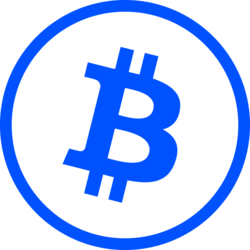
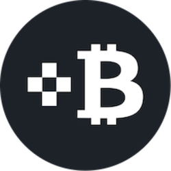

Fee components
Expect components such as source-chain gas, bridge or issuer fees, exchange spread, and Bitcoin miner fees. Bitcoin.org explains that Bitcoin transactions can include network fees on its user guidance page.
Unwrap BTC — Turn wrapped Bitcoin exposure back toward native BTC by matching the token, chain, and redemption route.
Live preview — open Unwrap BTC to redeem.
Start by identifying the exact token contract and network. The redemption path for wrapped BTC is not the same as a normal token swap.
Costs are route-specific, and the largest risk is usually using the wrong network or assuming every wrapped BTC token redeems the same way.
Expect components such as source-chain gas, bridge or issuer fees, exchange spread, and Bitcoin miner fees. Bitcoin.org explains that Bitcoin transactions can include network fees on its user guidance page.
Custodial wrappers depend on an issuer and reserve process; protocol-based wrappers depend on bridge contracts, operators, and redemption rules. Review issuer documentation before assuming the path is self-service.
ERC-20 wrapped assets use token contracts and approvals. Ethereum.org's ERC-20 overview is a useful baseline for understanding transfers, balances, and allowances.
Most errors come from mixing native BTC addresses with smart-contract networks. Slow down at the address, network, and asset-selection screens.
An ERC-20 or Base token cannot simply be sent to a native Bitcoin address unless the platform explicitly supports that deposit route and conversion.
WBTC, cbBTC, tBTC, and exchange-specific BTC wrappers can all look similar in a wallet. The contract address and network matter more than the ticker.
Some routes require accounts, eligibility checks, merchants, minimums, or protocol-specific steps. Coinbase describes supported wrapped asset networks in its wrapped assets help page.
Choose the route that matches the wrapper you actually hold.
Custodial wrapped Bitcoin Merchant
WBTC redemptions are handled through the WBTC merchant and custodian model, not by sending the token to any BTC address. Review the official partner and process pages before choosing a counterparty.
Docs ↗
Coinbase-supported wrapper Issuer
cbBTC routes depend on Coinbase account eligibility and supported networks. Match the chain shown in your wallet to the deposit or withdrawal network shown by Coinbase.
Docs ↗
Protocol-based bridge Bridge
tBTC uses Threshold's bridge design rather than a single exchange-style unwrap screen. Follow the bridge documentation and check redemption requirements before committing funds.
Docs ↗Account-based BTC withdrawal Account
Some exchanges accept a wrapped BTC deposit on a supported chain and let you withdraw native BTC afterward. Confirm the exact asset, chain, and deposit label inside the exchange interface.
Open ↗A short checklist reduces the chance of treating wrapped BTC like native BTC.
Verify the asset Verify
Use the contract address and chain, not only the token symbol. Scam tokens often borrow familiar BTC wrapper names.
Docs ↗Keep native gas ready Fees
An Ethereum token needs ETH for gas, while a Base token needs Base gas. The wrapped BTC itself usually cannot pay the source-chain gas fee.
Open ↗Check final destination Address
Only use a native BTC address when the redemption service is explicitly asking for a Bitcoin withdrawal address.
Docs ↗Review backing signals Reserves
Proof-of-reserve tools can help evaluate some wrapped assets, but they do not remove custody, bridge, or execution risk.
Docs ↗Different wrappers can all track Bitcoin exposure, but they do not share one redemption workflow. Start with the issuer or protocol documentation, such as the WBTC whitepaper, before moving funds.
| Asset | Typical unwrap path | Main thing to verify |
|---|---|---|
| WBTC | Merchant or supported exchange route | Official merchant, custodian model, and source chain |
| cbBTC | Coinbase-supported deposit or withdrawal flow | Account eligibility and supported network |
| tBTC | Threshold bridge redemption process | Protocol steps, fees, and redemption requirements |